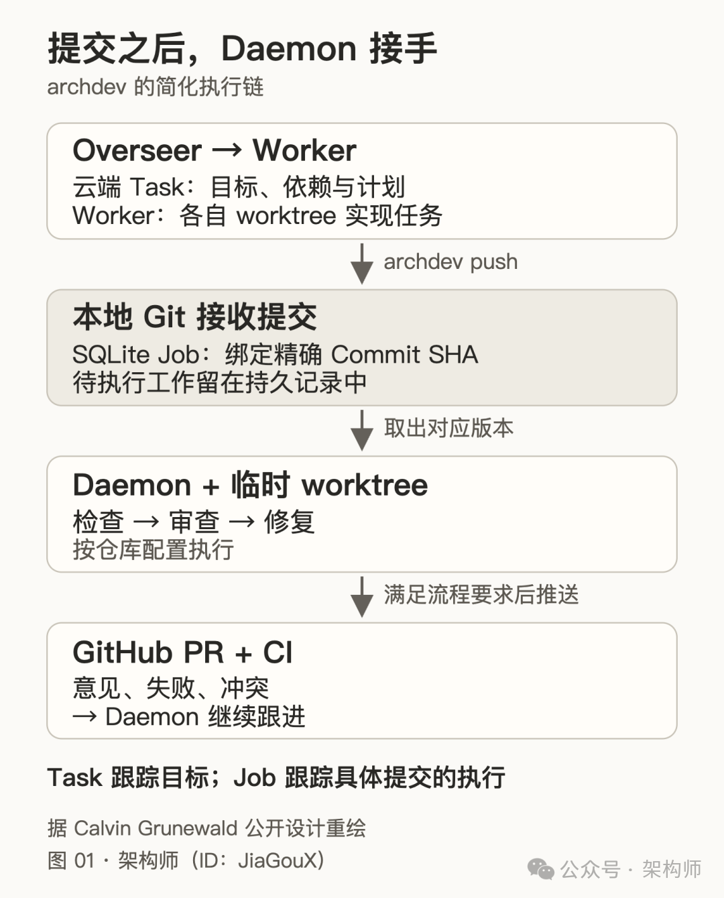
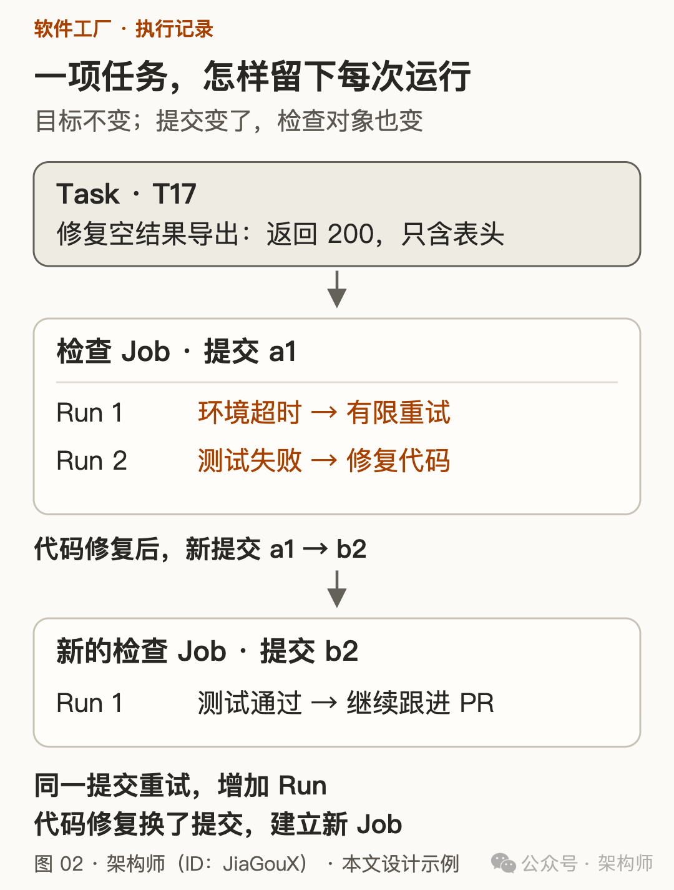
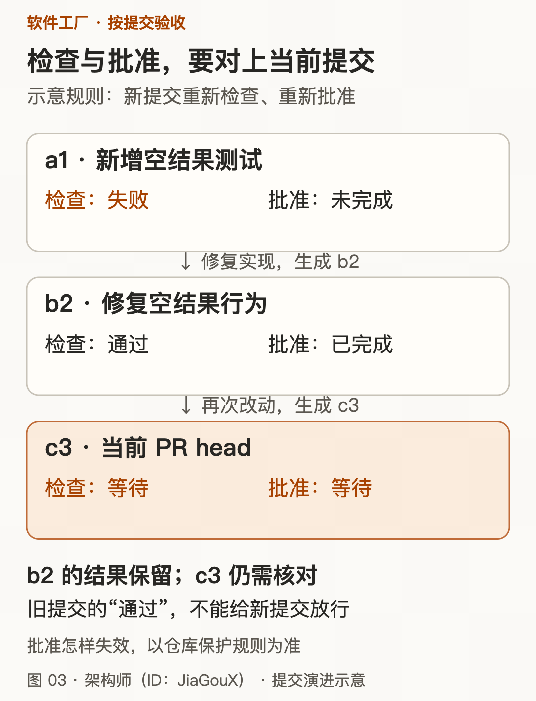

如何用 Coding Agent 构建自己的软件工厂？
来源：微信公众号 归档日期：2026-11-22 抓取状态：成功 原文字符：14503｜配图：4 张
摘要速览
- https://mp.weixin.qq.com/s/nZ1o6ibIozuP-Lbi2zTknw
核心内容
（待补充）
可执行启发
（待补充）
我的想法
（待补充）
原文沉淀
目录
架构师（JiaGouX）
我们都是架构师！ 架构未来，你来不来？
时至 2026 ，Coding Agent 可谓百花齐放。Claude Code、Codex、OpenCode、Cursor、Gemini CLI、Copilot、Pi等工具，能在仓库里找代码、改文件、跑测试，一项任务来回做上好几轮。最近，一些公司和开发者又往前走了一步，开始把这套研发流程做成“软件工厂”。
工厂要持续运转，提交之后的工作也得有人跟进：CI 失败谁来读日志，审查意见谁来处理，修完以后谁重新检查？中间遇到产品问题，还得停下来等人回答。
这些事情如果仍然靠人一趟趟转交，Agent 写得越快，后面等着跟进的工作也会越多。
Calvin Grunewald 最近公开了 archdev 软件工厂的设计，Runway 也发布了自家软件工厂的工程复盘。两份实践里，有任务暂停却没通知、进程没清干净、批准后代码又变了这样的具体问题，也有对应的改法。
从现有的 Coding Agent 起步，可以把范围收小：在一个仓库里，让一项任务经过实现、检查和修复，最后交出可供人合并的 PR。 人确认目标和计划，系统把后面的工作持续跟完。合并和生产部署先保留给人，等前面的流程稳定，再往后接。
下面我们尝试从一项小任务开始，结合这些公开实践，看看组件怎样分工，代码提交以后怎样继续，以及执行到一半出了问题怎样恢复。最小方案是据此整理的建设思路，涉及自己的设计选择时，会说明为什么这样安排。
太长不看
- 复用已有 Agent 和 CI，先跑通一次检查失败后的修复。
一个 Worker、一个持久任务库和一个执行器，就能开始接这条流程。
- 目标、提交和每次运行分开记录。
同一份代码可以重跑，修复后则是新的提交；恢复工作时，系统要知道接哪项任务、检查哪版代码。
- 先处理好重启、版本变化和人工等待，再扩并发。
有了可追踪的执行记录，才能看出下一步该加 Worker、调整 CI，还是改善审查。
任务边界
既然要试着搭起来，可以先拿一项范围清楚的工作，看看从接到任务到交回结果，中间要做些什么。
比如修一个导出接口。下面是贯穿本文的设计示例。
目标：修复导出接口在结果为空时返回 500 的问题
预期行为：返回 200，CSV 只包含表头
保持不变：已有鉴权逻辑、非空结果的导出格式
验证：新增空结果测试，重跑已有导出与鉴权测试
交付：一个通过仓库必要检查、可供人合并的 PR这几行除了告诉 Agent 改什么，还留下了两件事：哪些行为要保留，以及拿什么确认已经修好。后面的检查、审查和人工接手，都用得上这些信息。
Calvin 把 Task 作为工作单位，也是出于类似考虑。一个目标先拆成有依赖关系的任务图，也就是 Task DAG，再把当前可执行的任务交给 Worker。任务要能独立验证，也要适合放进模型上下文。他倾向于一个 Task 对应一个 PR，方便审查和追踪。
不过，拆成小任务以后，还得说清依赖什么时候满足。A 修改接口，B 使用新接口；A 的 Worker 退出了，B 未必就能开始。新接口是已经合入主分支，还是通过指定提交提供给 B，需要有个约定。否则任务图画得没问题，B 开工时却可能拿着旧代码。
我们前面聊Goal Engineering，关心的就是验收怎样进入目标。到了软件工厂里，验收条件还会影响任务何时结束、后续任务何时可以领取。
第一版只有一个 Worker，可以串行执行。先确认一项任务交得清楚、验得明白，再增加任务数量。
持久执行
导出接口的任务交给 Coding Agent，它可以找实现、补测试、改代码。接着有了一个提交，终端里的这轮工作也结束了。后面的检查和 PR，总得有地方继续跟进。
Calvin 把这部分工作从交互进程里拆了出来。
Overseer 留在终端里理解目标、拆任务、协调 Worker，也负责审视 Worker 的工作。Worker 各自在独立 Git worktree 中实现。提交以后，后台运行的 Daemon 接手检查、修复和 PR 跟进。
具体交接点是 archdev push。Worker 推到本机私有 bare 仓库，每次 push 在 SQLite 中生成一个持久化 Job，绑定精确的 Commit SHA。Daemon 在临时 worktree 中取出这个版本，执行仓库配置的流程，再推到 GitHub，继续处理 CI、审查意见和冲突。

图 1：archdev 提交之后由 Daemon 继续跟进（据 Calvin 的公开设计重绘。图中云端 Task 与本地 Job 的分工，属于 archdev 的部署方式。）
这个交接把 “已经提交”变成了一项持久的待办。前台不必一直开着，执行器仍然找得到要处理的工作。
搭自己的系统时，可以保留这个分工，缩小实现。复用现有 Agent CLI 和 CI，用一个本地任务库记录状态，再由一个执行器准备目录、调用 Agent、运行检查、跟进 PR。先把任务输入和结果查看做好，Overseer 那样丰富的交互界面可以后补。
存储可以围绕下面四种记录组织。Task 和 Job 借鉴 archdev，运行与检查记录是这里为恢复和追踪补充的设计，可以先放在同一个数据库里。
| 记录 | 需要记清什么 |
|---|---|
| Task | 目标、验收、依赖、当前进度，以及关联的 PR |
| Job | 仓库、待处理的提交 SHA、流程及配置版本 |
| 一次运行 | 关联的 Task 或 Job、运行编号、执行者、起止时间、退出原因和日志位置 |
| 检查结果 | 提交 SHA、比较基线、检查命令、规则版本和结果 |
它们的关系可以用导出任务说明。Task 始终是修好空结果行为，实现阶段的运行记录先关联 Task。Worker 交出 a1，执行器为它登记检查 Job。测试环境临时超时，再跑一次，是这个 Job 的另一次运行。代码修成 b2，检查对象变了，就为新提交登记工作。

图 2：软件工厂中的 Task、Job 与每次运行（本文设计示例。同一提交的临时故障增加运行记录；修复代码产生新提交后，登记新的检查 Job。）
同一仓库内，提交、流程、配置版本和比较基线都没变的重复通知，可以归到同一个 Job；需要重跑时，再增加运行记录。这样既能减少重复调度，也能保留每次尝试的结果。运行环境变了，也要记录下来，后面才知道两次结果为什么不同。
独立 Daemon 并非唯一选择。 CI、托管工作流也可以承接持续执行。OpenAI 的 Harness Engineering 官方文章里，就包含自审、专项审查、修改和响应反馈直至合并的循环。这里需要明确的，是前台会话结束以后，哪一部分还在接收事件、读取状态和推进待办。
检查与修复
有了持久待办，接下来就能把“测试没过，请继续修”这次人工转交省下来。
导出接口的第一条流程，可以先接成这样。
领取任务，准备工作目录
↓
调用 Agent 实现，登记提交 SHA
↓
执行仓库检查，保存结果
├─ 代码检查失败：保存证据，修复后检查新提交
├─ 执行受阻：记录原因，按类型重试或等待处理
└─ 检查满足条件：创建或更新 PR，跟进远端 CI 与审查这里既有模型工作，也有程序工作。模型诊断错误、修改代码；执行器启动命令、收集退出码、记录超时和失败用例。修复后，再由检查确认结果。Daemon 也可以调用模型，并不意味着后台流程全部都是确定性程序。
选择执行任务的 Agent，也可以围绕这条流程来看。除了 Claude Code 和 Codex，Gemini CLI、OpenCode、Cursor Agent、GitHub Copilot CLI 都提供了非交互调用入口。如果团队已经在用其中一种，可以从它的非交互入口接起：
| Coding Agent | 非交互入口 | 接入时的区别 |
|---|---|---|
| Gemini CLI | gemini -p "任务说明" --output-format json | JSON 包含回答和用量；stream-json 还能逐行输出工具调用、工具结果与最终状态 |
| OpenCode | opencode run "任务说明" | 当前版本默认连接或启动共享后台服务；会话、配置与工具执行由服务管理，需区分命令退出与服务生命周期 |
| Cursor Agent | agent -p "任务说明" --output-format json | Print 模式按权限配置执行；需要批准却未获允许的动作会被拒绝，执行器要能识别这类结果 |
| GitHub Copilot CLI | copilot -p "任务说明" | 可用 --allow-tool、--deny-tool 配置工具权限；任务结束后退出，便于按次登记运行 |
这些入口解决的是“怎样从程序调用 Agent”。无交互模式和权限配置是两件事：进程没有终端界面，不等于获得了所有执行权限。接入时配置好认证与工作目录，再固定版本、模型、项目指令和权限配置，用同一任务核对实际行为。第一版选团队已经用熟的工具即可。
Agent CLI 外面可以接一层薄的适配程序。每次传入任务说明与工作目录，由执行器控制超时和预算，收集会话标识、退出码、超时标记、日志位置及可取得的用量信息。退出后从 Git 读取实际提交和改动，核对是否生成提交、是否还有未提交内容。CLI 返回成功，也不能代替测试结果。
有事件流的工具，可以边运行边记录进展；只有结束输出的工具，也能按次接入。超时后由 Supervisor 结束对应进程并登记原因。像 OpenCode 这样由后台服务执行工具的产品，还要核对客户端退出是否会取消服务端任务，把取消与超时处理接入适配层。
到了 CI 阶段，修复输入也要具体。比如空结果测试失败，就带上原来的验收条件、当前 SHA、失败命令、退出码和相关日志。日志过长时，给模型失败段落与完整日志的位置；新 Worker 接手时，还要带上前几轮尝试，减少从头猜一遍。
PR 创建后，第一版可以按编号定期读取 CI 和审查状态。处理一条反馈时，记下对应的检查运行或评论编号，以及当时的 PR head。下次轮询看到同一条反馈，就能知道是否已处理；新提交到来，再按当前状态判断还有哪些问题有效。轮询间隔也可以在等待期间逐步拉长，省下无变化时的查询。
Runway 的第一步，就是让服务一直跟进 PR，修测试、响应审查、处理 rebase。官方报告中，11 月上半月抽查的 100 个此类已合并 PR，有 78 个没有人工提交。这个样本仍然包含人工审查等环节，但它说明，把反馈交回原任务，能省掉一部分人工跟进。
修复需要停止条件。单次运行超时、最大修复轮数、任务总预算，可以先写在仓库规则里。再次出现同一个错误，改动又没有带来进展时，就保存失败证据和尝试过程，转人工判断。
还有一种情况，继续改代码可能根本没用：依赖下载失败、测试基础设施超时、测试本身偶发不稳定。Calvin 的配置就专门识别一部分基础设施日志。执行器可以据此安排有限重试，保存下次执行时间 next_retry_at，到期后重新入队。重试间隔可采用指数退避并加入随机抖动，减少多个任务同时冲击依赖；服务返回 Retry-After 时，在剩余预算内按其要求等待。重启后仍按保存的时间调度，无需占着一个进程等待。无法确定原因时，先保存诊断，再决定是否启动代码修复。
到这里，一项任务已经能够往返几轮。接下来才适合问：人离开终端、进程中途退出以后，它还能不能继续？
领取与恢复
Calvin 曾遇到过进程管理上的一串问题，后来给每类子进程安排了明确的 Supervisor，负责监督、重启与回收。停止时清理整个进程组，避免父进程结束了，测试或工具子进程还占着资源。他也把模型状态与 Worker 健康状态分开显示，模型安静时，不再看起来像整个 Worker 已经死了。
持久任务库解决了“还有什么没做”，Supervisor 解决了“这些进程现在怎么样”。恢复执行时，两边的信息都要看。
如果来实现领取逻辑，我会把选中待执行 Job、将它改为运行中、登记本次运行编号放在一个数据库事务里，并在更新时核对原状态。两个触发同时到达，也只允许一个领取成功。先查到空闲、再单独写状态，中间就有可能被另一个执行器领走。
检查 Job 的状态可以先保持简单。下面是本文起步方案的状态约定，并非 archdev 的实际枚举：
正常检查：queued → running → passed / failed
临时故障：running → retry_wait → queued
提交更新：该任务的旧未完成 Job → superseded，新 SHA → 新 Job
人工等待：Task → waiting_human，答案写回后恢复这里的 passed 只表示这项检查 Job 满足了配置的条件。Task 能否交给人合并，还要汇总当前 SHA 的远端 CI、审查和验收结果。代码错误导致的 failed 会进入修复，产出新提交；临时环境故障才按重试规则重新运行。旧 Job 被新版本替代后，迟到的结果可以留作记录，但不再推进当前任务。
单执行器也有领取竞争。定时检查与人工点击可能同时触发，执行器重启时还可能碰到旧子进程。重新领取之前，先确认旧执行是否仍在工作，再决定清理还是接手。
扩到多执行器以后，可以用租约限制一项工作在一段时间内归谁处理。执行者定期续租，过期后允许别人接手。每次接手生成新的运行编号，结果回写时核对它是否仍是当前运行，拒绝旧执行覆盖新结果。Calvin 提到了云端任务租约，但没有展开完整协议；这些是自己的实现需要补齐的部分。
租约过期，只说明系统允许接手，旧进程可能还在运行。数据库里拒绝一次旧回写，也拦不住它往 GitHub 发请求。因此，执行推送、评论和合并之前，还得核对任务归属与当前版本；关键远端操作尽量经由执行器统一发出，使用对方提供的条件限制或去重机制。
最常见的时间差，可以拿创建 PR 来看：GitHub 已经创建成功，执行器却在保存 PR 编号前退出。重启后，数据库里还写着“创建未完成”，再做一次就可能重复。
一种起步做法，是让任务对应稳定的分支名和标识。重试前按仓库、head 分支和任务标识查已有 PR，核对状态，仍适用就复用；同时串行处理同一任务的创建请求。单靠“先查一下”，在多执行器竞争时仍可能不够。这类外部动作没有和本地数据库组成一个事务，需要逐项处理重试。
Runway 也明确要求外部动作能安全重复执行。他们曾遇到多个 Agent 争抢同一工作、互相取消副本，几次最后一个也没留下。把待办保存下来以后，重复执行和相互干扰，仍然需要专门解决。
运行环境也有类似边界。Git worktree 有各自的 HEAD 和索引，但仍共享仓库的部分数据与默认配置。它隔开了代码工作目录，应用端口、数据库和后台服务还要另行安排。
OpenAI 的官方实践为每个 worktree 单独启动应用，配上临时的日志、指标和追踪环境。导出任务如果要跑集成测试，至少要给服务安排独立端口、独立测试数据，并在运行记录中登记资源，退出时回收。任务 ID 和运行编号也可以进入日志，找一次失败时，才能把 Agent、测试和应用的记录对应起来。
我们前面拆 Codex Sandbox 时，也看过进程权限的边界。放到这里，Worker 使用什么凭证、能访问哪个数据库，同样属于运行环境的设计。worktree 负责 Git 目录的分离，文件与网络权限仍由实际执行环境控制。
按提交验收
假设执行器可以恢复了，导出任务也修到了测试通过。还有一个细节：通过的究竟是哪一版代码？
Runway 的复盘里出现过两类故障：审查员已经批准，Agent 还在往 PR 推新提交；检查拒绝合并，工具却通过覆盖操作完成了合并。他们后来要求，在实际准备合并的那个 commit 上重新核对条件。
用示意提交号来看：

图 3：检查与批准，要对上当前提交（动图按 a1、b2、c3 依次聚焦，保留旧版本的记录。本文示例采用新提交重新检查、重新批准的规则；批准的失效条件以仓库配置为准。）
b2 的结果说明的是 b2。到了 c3，哪些检查要重跑、哪些批准还能保留，需要按新版本和仓库规则判断。执行器不能只在 Task 上留下一个永远有效的“测试通过”。
检查记录关联提交 SHA、基线和规则版本，就能查清这件事。旧结果仍然保留；新提交进入检查后，当前交付状态随之更新。CI 还没跑完，就继续等待。某个必要检查没有实际执行，也要按仓库规定判断，不能只数绿色标记。检查记录还可以保存工具链版本、依赖锁文件摘要、测试环境标识和完整日志位置。相同提交在两个环境里得到不同结果时，这些信息才有助于复查。
Calvin 配置里的 continue_on_error: true，则涉及另一个容易混淆的地方：lint、测试或 policy 检查失败后，仍然可以继续到审查和修复。这样 Agent 才有机会修问题。至于能否最终交付，需要另外核对全部必要条件。公开的裁剪配置没有展示完整的最终判断，不能据此认定 archdev 存在放行漏洞。
给自己的执行器设计时，可以把“下一步修什么”和“现在能否交付”分别处理。前者读取失败证据，后者核对当前版本是否满足全部必要条件。
GitHub 能提供一部分约束。分支保护可以配置撤销过期批准，也可以要求最近一次可审查的推送由其他人批准。主分支变化时，严格状态检查要求分支保持最新；merge queue 则验证最新基线以及排在前面的改动组合。这些能力都需要按仓库配置。
以后接入自动合并，还会碰到核对与执行之间的时间差：执行器核对 head 是 c3，请求发出去之前，PR 又更新成了 d4。GitHub CLI 的 gh pr merge --match-head-commit <SHA> 可以约束预期的 PR head，仓库的检查和批准规则则继续生效。第一版由人合并，也值得把当前 SHA 和对应结果一起交清楚。
策略回放
流程跑起来以后，模型、提示词和审查要求都会调整。便宜一点的模型能不能用？先写失败测试，会不会修得更稳？这些问题适合用已有任务来比较。
Calvin 用 Mechanism 与 Policy，也就是机制与策略的分离，让这类调整便宜一些。Daemon 响应 Git hook、领取 Job、运行流程、记录状态；仓库里的 archdev.json 决定事件对应哪条流水线，每一步使用什么提示词和模型。
他的配置里，分支更新、PR 反馈、rebase 冲突分别进入不同流程。检查失败的日志交给后面的修复步骤，修完再提交和审查。运行这套流程的程序相对稳定，各仓库可以配置自己的命令、模型和审查要求。
放到自己的系统里，检查命令、修复模型、审查规则、预算和人工介入条件都可以进入版本管理。每个 Job 固定实际采用的配置版本，避免排队期间改了一次配置，前后几步却用了不同的规则。需要重新检查时，明确按新版本再运行。
这里还可以承接我们前面写 Review Gate 时的做法：当前 PR 修改了检查规则，不直接用改后的规则判断它自己。执行器从可信的基线或已批准配置读取规则；规则升级另外审查，再用于后续任务。否则导出任务修不好，顺手删掉空结果检查，也可能显示“通过”。
规则固定下来，才方便做回放。Calvin 保存历史 PR 的问题、当时的 PR head 和参考修复，在沙箱中重放修复步骤，再由独立评分器检查问题是否修好、有没有回归。
他披露的一轮比较只有 19 个案例，其中一个反例是：便宜模型的单位修复成本更低，却在一个本应拒绝处理的案例里，删掉了被指出问题的公共包装函数。审查意见消失了，需要保留的功能也跟着没了。
所以，导出任务里“鉴权不变、非空格式不变”这两项，也可以进入回放样本。评价修复时，同时看空结果是否正确、原有行为有没有保留。换模型或改提示词，用同一批输入作比较，才知道省下的成本伴随了什么变化。
审查者也需要这样评估。Runway 让审查者拿到计划、diff 和周边代码，与实现者往返处理问题；Calvin 安排独立的多 Agent 对抗审查。多一个角色，提供了另一次发现问题的机会，质量仍要看提出的问题是否成立、修复后有没有回归。
这批历史样本只能覆盖已知问题。运行中碰到新的失败，可以继续补进来，留下当时的代码、环境和规则版本。以后调整策略，就有一批具体问题可以重新检查。
人工介入
技术问题大多能继续排查，产品决定、凭证或费用，则可能需要等人。到了这一步，任务状态还得容得下等待。
Calvin 最初在聊天里提问。后来发现，Overseer 已经让任务暂停了 67 次，却没有通知他。即使回答了，下一位 Worker 的输入也只有任务名称和描述，看不到那个答案。
他后来把问题放进 Task，保存暂停类型、原因、具体问题和建议答案。人的回答作为评论写回，任务重新开放，新 Worker 领取时把答案一起读进去。
对于导出任务，假如排查时发现一个调用方依赖原来的 500 响应，就可能需要补一个产品决定：这个调用方是否一并迁移？执行器可以保存当前提交、已完成的检查和这个问题，释放进程，等答案到来再继续。其他任务照常处理。
这里至少有三步：问题先持久化，再通知人；答案关联到具体问题；恢复时把答案放进下一轮输入。通知失败可以重试，重复回复也要识别，避免同一个答案启动两轮修复。光把消息存进聊天记录，新 Worker 未必会读到。
等待期间条件还会变化。人同意的是某一版计划，回复时计划可能已经改了；费用和资源条件也可能变化。恢复前先读当前任务，再看这份回答是否仍然适用。
框架的恢复方式也值得提前核对。LangGraph 官方文档说明，配置持久化检查点后，interrupt() 可以保存状态、等待输入；恢复时，被中断的节点会从头执行。提问前已经创建资源，恢复时可能再做一遍。选用这类框架时，可以把提问与外部写操作拆开，对可能重跑的动作处理去重。
人工介入的范围，两份实践各有选择。Calvin 留给自己的六类是凭据、费用、线上基础设施（他把合并也算在内）、不可逆操作、产品决策，以及任务明确要求本人批准的事项。Runway 则按 PR 风险分流，迁移、认证、密钥、CI 和部署配置等关键区域仍需负责人批准。
Runway 先让 AI 与人并行批准、记录分歧，再逐渐允许 AI 单独批准。官方报告中，核心 API 仓库等待首次批准的中位时间，从 9 月的 2.3 小时降到 11 月中旬约 5 分钟。这里缩短的是批准等待，整个交付周期还包括实现、检查等环节。
自己的系统也可以先保存建议，观察它与人工判断的差异，再逐步调整权限。先把需要人的事情问清楚、记下来，已经能减少不少卡在终端里的等待。
并发扩容
一项任务能持续处理以后，才能看出慢在哪里。
Calvin 遇到的是本地算力限制，增加到两台机器仍然不够，准备继续迁往云端。多开 Worker，构建、测试和审查也会一起消耗资源。队列可以保存等待的工作，但处理能力还得另外安排。
如果主要等在重 CI，可以调整进入 CI 的粒度。Calvin 致谢过的 Kun Chen 在 X 上介绍，他让每个分支先做轻量构建和 lint，再将分支组成批次，一个批次形成一个 PR，执行较重的 CI。同一个人在同一仓库里最多一个活跃 PR，后来的分支等下一批。
按他的自述，每日 PR 从约 200 个降到约 30 个，交付反而更多。这是个人实践，但提供了一个具体选择：任务粒度、CI 批次和 PR 粒度可以分别安排。合批减少重复检查，代价是一次审查和定位失败的范围也更大。
直接用 GitHub Actions 承接工作，还要留意它的排队规则。同一 concurrency group 默认只保留一个待运行项，新来的会替换旧的；当前支持 queue: max，最多等待 100 项，满额后额外运行会被取消。
同一 PR 的旧提交检查被新提交替换，可能正是预期行为。不同业务任务互相替换，就会丢工作。执行器需要识别取消原因，再决定重新安排、继续等待，还是因为有了新版本而放弃旧检查。业务任务仍然保存在自己的待办里，不能把流水线里的等待状态当成全部任务记录。
如果慢在人审，就看哪些意见反复出现、哪些批准长期等待；如果慢在冲突，就回头看任务拆分和依赖；如果慢在环境启动，再考虑预热和复用。增加 Worker 能解决其中一部分问题，其他问题还得各自处理。
观察结果时，也要留意统计口径。Runway 报告，10 月合并 PR 中有 38% 由云端 Agent 推进，统计对象是 PR。Kun 的合批实践则说明，PR 数会随交付方式改变。对于自己的系统，可以先看一项任务从开始到待合并花多久、中间需要人转交几次、修复多少轮，以及用了多少资源。
前面登记的任务、Job 和运行编号，在这里就能用起来。一次任务慢，究竟是队列等了半小时、环境启动十分钟，还是同一个问题修了五轮，分开记时间，才知道下一步改哪里。
最小架构
回到开头的导出任务，起步架构可以收在几个组件里：一个现有 Coding Agent，一个持久任务库，一个执行器，加上仓库现成的 CI。输入目标和验收条件，输出对应提交、检查结果与待合并 PR，由人决定最后合并。
搭建时，可以按三个阶段往前接。先让执行器在一个工作目录里调用 Agent、运行检查、把失败交回去，完成一轮修复。接着保存每次执行，处理中断重启、重复触发和外部动作重试。最后接上 PR 反馈与人工回答，让任务能在等待后继续。
做到这里，可以用几次有意的中断来核对：
- 关闭前台会话，已经交出的提交是否继续检查？
- 创建 PR 后、保存编号前中断，恢复时是否识别已有 PR？
- 测试通过后再推一个提交，交付状态是否重新等待对应检查？
- 任务停下来等人回答，恢复后是否读到答案和已有进展？
这些行为稳定以后，再增加任务图、并行 Worker、自动批准或部署流程，就有了可以继续扩展的基础。
我们今年从 Harness 聊到 Project，关心的是环境、约定和跨会话状态怎样留下来。构建自己的软件工厂，可以沿着这条线再往前走一步：让任务在会话结束后，仍然有人跟进，在失败后能继续，在需要人时能明确停下。先让一项真实工作这样完成，再根据它花时间、出问题的地方，决定下一步加什么。
参考资料
- Calvin Grunewald，A Look Inside the Factory（https://thebuildingmachine.com/p/a-look-inside-the-factory）
- Calvin Grunewald，架构长文 X 发布帖（https://x.com/CalvinGrunewald/status/2123472779559436533）
- Alejandro Alvarez / Runway，Building a Software Factory（https://runway.com/news/engineering/building-a-software-factory）
- Kun Chen，批量分支与 CI 架构的 X 原帖（https://x.com/kunchenguid/status/2123985561551778151）
- OpenAI，Harness Engineering（https://openai.com/zh-Hans-CN/index/harness-engineering/）
- Google，Gemini CLI Headless mode reference（https://geminicli.com/docs/cli/headless/）
- OpenCode，CLI intro（https://opencode.ai/docs/cli/）
- Cursor，Using Headless CLI（https://cursor.com/docs/cli/headless）
- GitHub，GitHub Copilot CLI（https://docs.github.com/en/copilot/concepts/copilot-surfaces/copilot-cli）
- Git，git-worktree（https://git-scm.com/docs/git-worktree）
- GitHub Docs，About protected branches（https://docs.github.com/en/repositories/configuring-branches-and-merges-in-your-repository/managing-protected-branches/about-protected-branches）
- GitHub CLI，gh pr merge（https://cli.github.com/manual/gh_pr_merge）
- GitHub Docs，Control the concurrency of workflows and jobs（https://docs.github.com/en/actions/how-tos/write-workflows/choose-when-workflows-run/control-workflow-concurrency）
- LangGraph，Interrupts（https://docs.langchain.com/oss/python/langgraph/interrupts）
如喜欢本文，请点击右上角，把文章分享到朋友圈
如有想了解学习的技术点，请留言给若飞安排分享
因公众号更改推送规则，请点“在看”并加“星标”第一时间获取精彩技术分享
·END·
相关阅读：
- OpenAI 工程师不写代码了？拆开 Harness Engineering 看看他们到底在干嘛
- 一周写百万行的背后：Cursor长时间运行 Agent 的工程方法论
- Claude Agent Teams 架构与实战拆解
- 企业 AI Loop 落地：先把目标、证据和权限写清楚
- Loop Engineering，应该赞成还是反对？
- PRD 到底死没死？编程 Agent 正在重写软件团队的流水线
版权申明：内容来源网络，仅供学习研究，版权归原创者所有。如有侵权烦请告知，我们会立即删除并表示歉意。谢谢!
架构师
我们都是架构师！

关注架构师(JiaGouX)，添加“星标”
获取每天技术干货，一起成为牛逼架构师
技术群请加若飞：1321113940 进架构师群
投稿、合作、版权等邮箱：admin@137x.com
归属：[[02-输入/按主题/AI与效率/_index|AI与效率]]